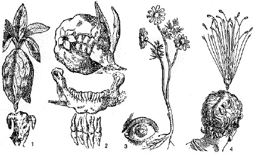

ŞEKİL 37. İşaretler öğretisine göre, sırasıyla kulak, diş, göz ve saç ile eşleştirilen bitki örnekleri:
“Dışsal benzerlik, tedavi edici etkiyi işaret eder”.67
Paracelsus’a göre nerede bir hastalık varsa, orada, dış görünümü, hastalığın belirtilerine karşılık gelen bir şifalı bitki bulunmalıydı. Benzerlik öğretisine göre ciğerotunun (“Hepaticae”) 3-loplu yaprakları karaciğeri, ceviz ağacının (“Juglans regia”) meyvesi olan ceviz içi beyni, haşhaş kapsülü ise başı işaret ederdi. Bu benzerlikler nedeniyle ciğerotu sarılık hastalığında (“hepatitis”), ceviz akıl hastalıkları ile baş ve migren ağrılarında, incir gibi beyaz bitki özü içeren bitkiler süt salgısını artırıcı olarak, boğumlu görüntüsünden ötürü bambu omurga hastalıklarında, sarı renginden ötürü altın sarılıkta, benekli taşlar ise lekeli hastalıklarda kullanılmalıydı. Eskiçağda ise insanlar cevize “Zeus’un palamutları” derler ve baş tanrının hayalarına (testis) benzetirlermiş; bu bağlamda etimolojik açıdan Latince ceviz (“juglans”) ile İngilizce salgıbezi (“glands”) sözcükleri arasındaki benzerliğe dikkat çekilmektedir. Devedikeni (“Silybum marianum”) böğür sancısına ve batıcı diğer ağrılara, kılıçotunun (“Hypericum perforatum”) delikli yaprakları (gerçekte ise ışığa tutulduğunda bunların delik gibi görünen yağ birikintileri olduğu anlaşılır) bıçak yaralarına, kırlangıçotunun (“Chelidonium maius”) sarı renkli sütlü özsuyu ve merzagî nergisin şarap içinde kaynatılmış sarı çiçekleri sarılıkta, kırmızı yakıotu ise iç ve dış kanamalara karşı kullanılabilirdi. Taşkıranotu (“Semen saxifragae”), mesane taşlarını çözmeliydi. Orkidenin (“Orchis rubra”) kök yumruları, adından da anlaşılabileceği üzere afrodizyak olarak geçerliydi; çünkü onlar, testise benzer yapıya sahiptiler (bitkinin adı da bu benzerlikten gelmektedir: “Orchis”: testis; bitkinin “Orchis mascula” türünün Arapça adı: “husyet el-sa’leb”: tilki taşağı). Gut hastalarının ayak baş parmaklarının şiş ve kızarık şeklini andıran çiğdem soğanı, söz konusu hastalığın en etkili ilacı durumundadır.61, 68 Bu örnekler çoğaltılabilir: Kız kalbi (“Dicentra cucullaria”) bitkisinin kalp şeklindeki pembe çiçeklerinin kalp-damar hastalıklarına iyi geleceği, lohusaotunun (“Aristolochia clematitis”) uterusa benzer kıvrık çiçeklerinin güç doğumları kolaylaştıracağı ve renk analojisi nedeniyle kadıntuzluğu (“Berberis vulgaris”) bitkisinin odunsu gövdesinin sarı renkli kabuk kısmı ile zerdeçöpün (“Curcuma longa”) toprakaltı gövdesinden elde edilen sarı renkli tozun sarılık hastalığını tedavi edeceği umulmaktaydı.69
Ortaçağ insanı nesneler arasında benzerlikler aramış ve bunları Tanrı’nın işaretleri olarak yorumlayıp “Signatur” diye adlandırmıştır. Bu “Signatur” (işaret, imza), “görünmez Tanrı’nın izi, yaratıcının yaratılan üzerindeki gölgesi ve resmi” idi. Avrupalı simyacı Oswald Croll’un Latince bir yazısında şu ifade yer alır: “’Signatur’, karşılıklı bir benzeştirme, bitkilerle beden kısımları arasındaki bir eşleştirmedir, sempatidir”. Bu konuda en iyi bilinen örnek haşhaş kapsülü olup, onun, üzerine taç yerleştirilmiş kafa şeklindeki yapısı, haşhaşın insanın kafasına ve beynine olan hükümranlık etkisini gösterir (afyon çekenin kafayı bulması!). Mineral maddeler de böylesi işaretlere sahiptir. Mağara sarkıtları toz haline öğütülür ve 1 drahmi / dirhem (~3,7 gram) kadarı kullanıldığında, ter sökücü olarak etkisini gösterir. Buradaki benzeşim (analoji), sarkıttan akan damlalarla, akan ter damlaları arasında kuruludur. Ayrıca sarkıt (stalaktit), damlayan kireçli sudan kireçtaşının katılaşmasıyla oluştuğundan, sarkıt tozu, kemik iyileşmesini de hızlandırmalıdır düşüncesiyle kemik erimesinde ve damla (gut) hastalığında da kullanılmıştır.2 Eresos’lu Theophrastos, Dioskorides ve Galenos gibi klasik yazarların yanı sıra İslâm dünyasının İbn Sina, Musa ibn Meymun (“Maimonides”), İbn el-Baytar, el-Kazvinî ve Şemseddin el-Usmanî’nin (14. yüzyıl) eserlerinde, Davud el-Antâkî’nin (1541-1599) Tezkiretu Uli’l-Elbâb ve’l-Câmi li’l-Aceb el-Ucâb (Akıl Sahiplerine Notlar, Bilinmeyenlerin ve Tuhaflıkların Derlenmesi) adlı eserinde ve Fra Francesco Suriano’nun (1450-1529) Traité sur la Terre Sainte (Kutsal Topraklar Üzerine İnceleme) (1524) adlı eserinde Ortaçağ’da Ortadoğu’da “işaretler öğretisi” bağlamında kullanılan droglara ilişkin ipuçlarına rastlanmaktadır. Bu bilgiler, aşağıda çizelgeler halinde sergilenmiştir (ÇİZELGE 2, ÇİZELGE 3, ÇİZELGE 4):66